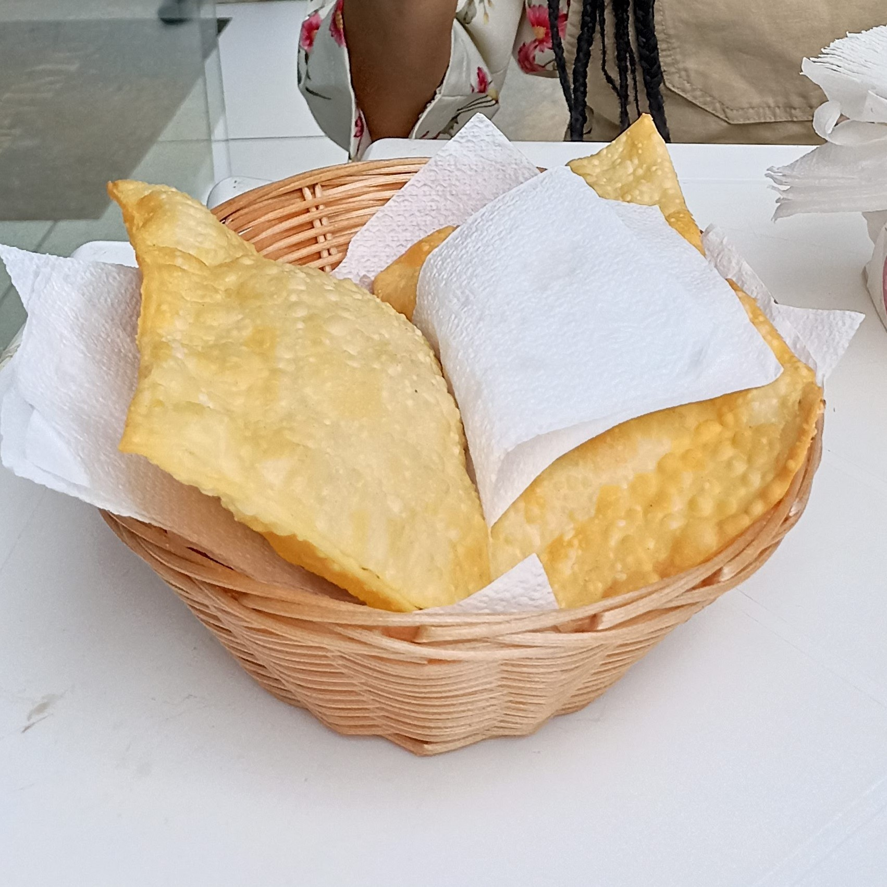

The best brazilian Pastel recipe

Crispy fried pastry filled with savory or sweet ingredients, popular in Brazilian street food culture a thin, rectangular dough folded over fillings like cheese, meat, or banana with cinnamon, then deep-fried until golden.
ingredients
Everything you will need to make this dish
🥟 Dough ingredients:
- 2 cups all-purpose flour
- 1 tablespoon Cachaça (Brazilian sugarcane liquor – helps make the dough crispier)
- 1 teaspoon salt
- 1 tablespoon oil
- 1/2 cup warm water (approximately)
🧀 Filling ingredients (simple cheese pastel):
- Mozzarella cheese, shredded or sliced (as needed)
- Oregano (optional)
🛢️ For frying:
- vegetable oil (enough for deep frying)
Steps to make it delicious:
1. Make the Dough
- In a large bowl, mix the flour and salt.
- Add the oil and cachaça, and stir.
- Slowly add warm water, mixing until a dough forms.
- Knead the dough on a floured surface for about 5–7 minutes until smooth.
- Cover the dough and let it rest for 30 minutes.
2. Prepare the Filling
- While the dough rests, shred or slice the mozzarella cheese.
- a pinch of oregano if desired.
3. Roll and fill the dough
- Divide the dough into small portions
- Roll each portion into a thin rectangle (the thinner, the crispier).
- Place cheese on one half of the dough.
- Fold it over and press the edges with a fork to seal.
4. Fry the Beauty
- Heat vegetable oil in a deep pan over medium-high heat.
- When the oil is hot (about 350°F / 180°C), fry each pastel until golden and crispy (about 2–3 minutes per side).
- Remove and drain on paper towels.
5. You did it! Just enjoy your amazing dish!
Now check it out our main page again!